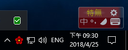
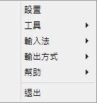

貳、簡易使用說明
本說明只限於本軟體的使用，不包含Windows的操作。有關小小輸入法平台的詳細使用，仍請自行查閱yong.chm的說明。
依使用程度分成三部分，初次使用時會“入門使用”這部分就足夠一般使用。“進階使用”包含一些不見得常用但較進階的實用功能。“進階設置”則是對設置的作法做些補充說明。
為方便說明，以下擷圖係以預裝的“梅花”皮膚設置為例，執行環境則是Windows 10。
一、入門使用
1. 啟動程式
主程式是yong.exe，執行後會在螢幕右下角的系統托盤處顯示一個淡紅色的梅花圖示。按“Ctrl + 空白鍵”即切換到中文模式，如下圖顯示的鮮紅色梅花圖示與狀態欄。

若被Windows收折而沒顯示在系統托盤，建議自行調整Windows（圖中左下角無柄的小向上箭頭，按下後出現小框，直接將圖示拉進系統托盤即可。），讓圖示顯示出來以方便使用。
預設的輸入法是“特無”，可依下述“設置檔之補充說明”改用別種做預設輸入法。
2. 常用快捷鍵
當狀態欄出現時，可以在上面點選並執行切換的功能，這部分可自行實際操作，這裡不贅述。也可以用快捷鍵來執行切換功能，切換時，狀態欄也會同時依實際狀況而變動。
以下是一些常用快捷鍵：
| 功能 | 快捷鍵 | 備註 |
|---|---|---|
| 輸入法啟用/關閉 | Ctrl + 空白鍵 | |
| 中/英模式切換 | 左Ctrl鍵 | |
| 輸入法選擇切換，之一：循環切換 | Ctrl + Shift | |
| 輸入法選擇切換，之二：直接指定 | Ctrl + 字母鍵區上方的數字鍵 | 1到9及0可分別切換到前10種輸入法。 |
| 切換回預設輸入法 | Ctrl + ` | 這個“`”通常在ESC下面，在“1”的左邊，即與“~”同一鍵位的符號。 |
| 半/全型切換 | Shift + 空白鍵 | |
| 繁/簡體切換 | Ctrl + Alt + S | |
| 重複輸入 | Ctrl + Alt + G | 重複上一次輸入的文字 |
上述常用快捷鍵的設置，有部分可在“設置”畫面調整，另一些則必須直接修改設置檔的[key]區段 。
3. 快捷命令選單
在右下角的梅花圖示按右鍵，即可出現快捷命令選單。

這個命令選單提供一些功能，較常用的有：
- 進行設置工作：“設置”畫面中可調整一些設置，像快捷鍵等等……。用滑鼠點狀態欄右上角的齒輪圖示也可進入設置畫面。
- 切換輸入法：除了上述用快捷鍵的方式，也可在這裡切換。
- 切換輸出方式：有些軟體需要改用剪貼簿的方式才能上屏，就要在這裡手動調整切換。若想讓小小自動切換，請見下述補充說明的“查看軟件窗口類名 ”。
- 幫助：可開啟小小的幫助檔yong.chm、“關於”，還有本說明文件編譯成的.epub檔。
- 退出：即關閉小小輸入法平台程式。
4. 直接輸入常用標點符號
小小輸入法平台提供了在中文模式下直接輸入全型常用標點符號的功能，只要輸入法的碼表沒佔用這些標點符號的鍵位，即可直接輸入常用標點符號。
| 符號 | 鍵位 | 備註 | 符號 | 鍵位 | 備註 |
|---|---|---|---|---|---|
| ！ | ! | 即Shift + 1 | …… | ^ | 即Shift + 6 |
| （ | ( | 即Shift + 9 | ） | ) | 即Shift + 0。以下需按Shift者，不再提示。 |
| —— | _ | 、 | \ | ||
| 【 】 | { | 循環輸出前後括號。以下這類前後二個一組的符號也是如此作法。 | 「 」 | } | |
| ； | ; | ： | : | ||
| ‘ ’ | ' | “ ” | " | ||
| ， | , | 。 | . | ||
| 《 | < | 》 | > | ||
| ？ | ? |
5. 初使用時可能想做的調整
預設的設定值是依照本人的輸入習慣所做，使用者可能會想依自己習慣做以下幾個調整：
- 光標跟隨：即讓候選窗跟隨著輸入的位置移動。因為自己很少選字，這功能對我反而是種干擾。若要開啟此功能，在“設置”畫面就能調整了，“候選窗”取消“不光標跟選”。
- 皮膚：在“設置”畫面就能調整了。
- 調整預設輸入法的碼表：這要調整設置檔中的一個數字，請參見後面“設置檔之補充說明”。
其他需要自行修改設定檔才行進行的調整，建議在使用過一段時間較為熟悉之後再去做。
二、進階使用
1. yong.chm“小小輸入法入門指南”中的幾項補充
- 入門指南>>快捷按鈕>>筆劃輸入：本軟體包裝的筆劃輸入引導鍵設為“ ~ ”，“橫豎撇捺折”五筆筆劃的代碼則沒改變，仍為hspnz。以“中”字為例，其筆劃輸入的代碼為~szhs，鍵入此代碼時也會顯示目前所用輸入法“中”字的代碼，所以也有反查的作用。
- 入門指南>>快捷按鈕>>查詢編碼、拼音：用滑鼠反白選擇要反查的字（Windows版還要複製到剪貼簿中），再按CTRL+/，就會出現。
- 入門指南>>快捷按鈕>>“造詞”與“在線調頻”：資料會寫入.yong\user.txt中。
- 入門指南>>快捷按鈕>>查看軟件窗口類名：有些軟體要以剪貼簿的方式上屏，可將該軟體的輸入視窗類別記在class.txt中，重啟輸入法後即可在進入該視窗類別後自動切換用剪貼簿上屏。取得方式是在輸入法啟用的情況下，將游標置於輸入視窗，按Ctrl+Alt+Shift+C即可見。
- 其它說明>>碼表設置>>碼表格式和設置>>發送文件：即插入整個文字檔中的文字內容或是一個圖檔。
- 其它說明>>碼表設置>>聯想功能設置：本軟體中的“聯想詞庫”tw\LC.txt乃自行由WinXP“相關字詞編輯工具”匯出。設置範例可見主設置檔中漢語拼音區段。
上述3, 5, 6項之文字檔編碼必須是GB18030。
2. 無暇覓
有些功能是整體層級的，如上述的“查詢編碼、拼音”，有些功能是輸入法層級的，各個輸入法各自設置。這裡提一些在無暇覓使用的功能，快無、特無大致也採相同設置。
- 分詞庫：用法就像嘸蝦米的“加字加詞”。
- 命令直通車：輸入一組代碼以執行某個命令，像啟動程式、連線到某網頁、插入文字檔或圖檔、日期時間星期之特殊編碼功能等等……。
- 輔助碼表：用注音，可惜只能查到第一種編碼。輔助碼表的用法，例如在無暇覓中不知如何拆“無”字，可在無暇覓中輸入注音的“無”字拆碼來反查無暇覓的碼。做法是先按 = 鍵，接著打“無”字的注音拆碼，選字列即會出現符合的字群及其無暇覓拆碼。
- 萬用字元：用 * 代表單一碼。這功能類似嘸蝦米用 ] 代表單一碼的萬用字元。小小目前沒有提供多碼萬用字元的功能。
- 字、碼互相轉譯功能：這功能利用命令直通車的作法，以python實作，故電腦需有安裝Python 3.X才能用。字轉碼時，將文字複製到剪貼簿，打ymode，轉出的碼在剪貼簿中，自行貼到文字編輯器中。同理，碼轉字時，將代碼複製後，打xmode，再把文字貼出來。
上述1, 2項之檔案可見下述“設置檔之補充說明”中的“分詞庫”。3, 4項之設置可見後述“碼表中的設置補充說明”。
小小輸入法平台本身就提供了繁簡轉換的功能，打正體字即可輸出簡體字，照理說本碼表不需再包含簡體字。但為了揭示某些字最簡碼的來源，仍保留簡體字，如“鄒”的最簡碼“neb”是源自簡體字的“邹”。打“neb”時這兩個字都會出現在選字區，方便不熟悉的人瞭解這種源自簡體字的最簡碼。其它類似的例子組合像“燦、灿”、“鑽、鉆”等等……。
3. 快無與特無
快無與特無的輔助碼表都是用無暇覓。
特無輸入符號的方式，與嘸蝦米的作法不一樣，改變如下：
- 常用標點符號直接輸入，不需按空白鍵組字。為了達成這作法，符號的拆碼也要做以下改變。
- 以“'”開頭的符號，不採用。數量只幾個，且改用逗號開頭的拆碼也很方便。
- 以“.”開頭的符號，拆碼前面再加“`”符號。數量也不多，影響不大。
- 以“,”開頭的符號，將開頭的“,”改成“`”。
- 不採用vrsf選字碼，直接用數字鍵選字。因上述改變後，這些選字的位置大多變了，這作法已無意義。
其它方面都與快無相同。如果在特無中對某個符號無法用以前習慣的拆碼打出來，可利用輔助碼表來查出特無的拆碼。除了少數幾個因前面加 ` 而增長的，特無中的符號是採用最簡短的拆碼 。
4. 其他輸入法
其他輸入法沒設置分詞庫與命令直通車，若有需要可自行設置。
萬用字元、輔助碼表與聯想詞庫的設置狀況如下：
| 輸入法 | 代表單一碼的萬用字元 | 輔助碼表。先按 = 鍵 | 聯想詞庫 |
|---|---|---|---|
| 行列 | * | 注音 | ✔ |
| 自由大新 | * | 簡易 | ✔ |
| 倉頡 | * | 簡易 | ✔ |
| 簡易 | * | 注音 | ✔ |
| 大易三碼 | * | 注音 | ✔ |
| 注音 | * | 無暇覓 | ✔ |
| 漢語拼音 | * | 無暇覓 | ✔ |
| 華象直覺 | * | 注音 | ✔ |
三、進階設置
1. 設置檔之補充說明
一般性的設置在“設置”畫面即可進行，進階的設置項目則必須修改設置檔：.yong\yong.ini。此檔案採UTF-8編碼，建議在修改此檔前先備份一下，以免出問題，若沒把握，最好別亂動。
設置檔中，以 # 開頭者表該行是註釋文字，這也適用於下述的碼表。設置項目相當繁多，以下幾項則是使用者比較有可能想要依自己習慣做調整的：
- [IM]區段下的default用來設定哪個是預設的輸入法。
- [key]區段用來設定快捷鍵。
-
[wuxiami]區段下的dicts設定，給無暇覓用的，其他輸入法也可在自身項目下設定該輸入法用的“分詞庫”。
dicts=tw/wuxiami.dic tw/cmds.dic
這項也可在設置畫面中指定。分詞庫必須是以GB18030編碼的文字檔。上例中設定使用二個分詞庫，後面那個是命令直通車用的分詞庫。“命令直通車”的指令可放碼表中，也可放分詞庫中，建議放在較常變動與具擴充性質的分詞庫中，儘可能少動碼表。
2. 碼表中的設置補充說明
除了上述的設置檔，每個輸入法碼表的前段[data]之前是碼表的設置，是針對該輸入法的。
本包裝所增加的碼表都在 tw 子資料夾中，可用純文字檔的文字編輯軟體來修改碼表，但有些這類軟體開啟大型純文字檔時較耗時，個人建議用wxMEdit，它在編輯巨大純文字檔以及變更文字檔編碼方面都相當方便。用文字編輯器開啟碼表時記得看一下所用編碼是否正確，本軟體包裝所提供的碼表都是用UTF-8編碼。另外，有的碼表可能會包含一般字型不支援的Unicode字元，若想在編輯器中正確顯示這些字元，可去下載“花園明朝”字型來安裝，並設置編輯器使用該字型。
以下以tw\wuxiami.txt為例：
-
assist== tw/phone.txt
指定輔助碼表。注意assist=後面接= tw/phone.txt，表示以=按鍵進入此功能，以注音的碼表來協助反查。
-
wildcard=*
萬用字元的設置。